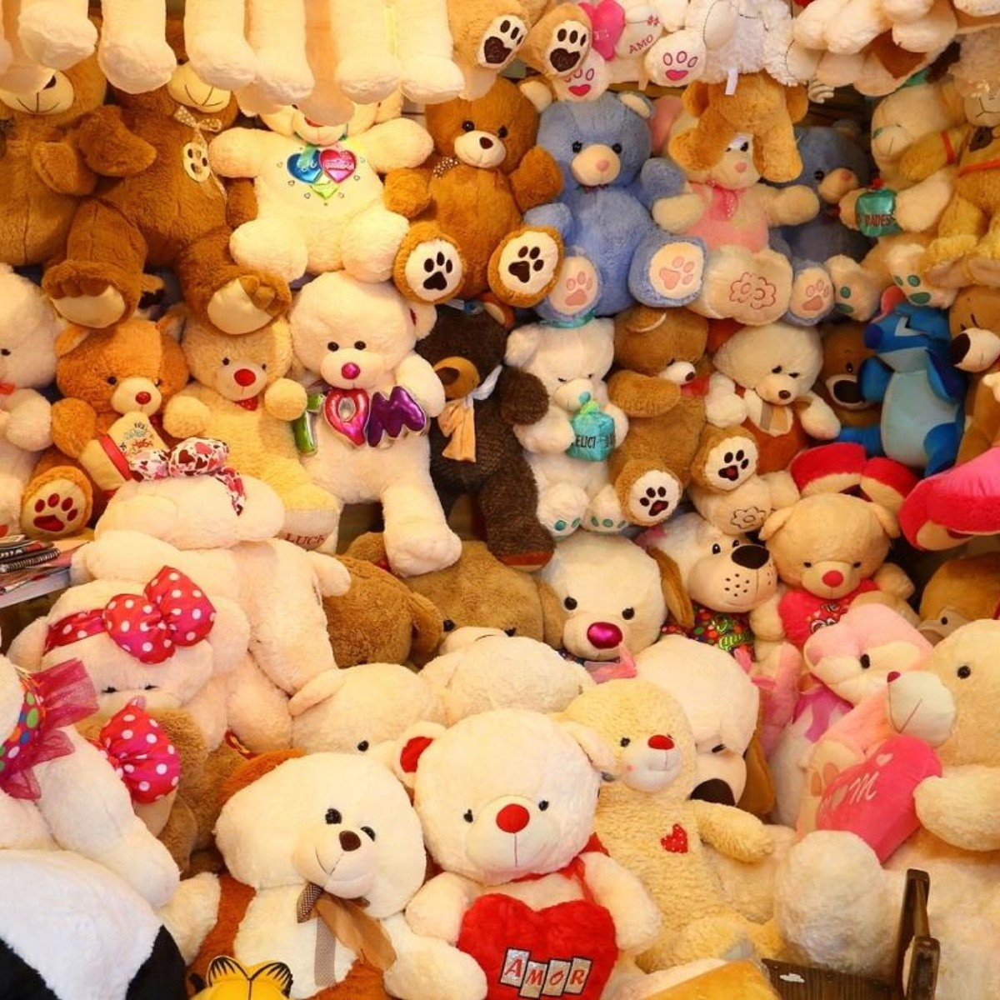
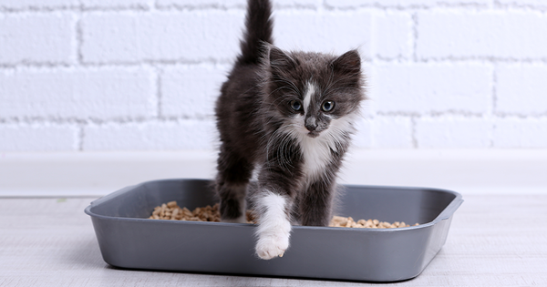

productos impresionantes
Los peluches son esponjosos, tiernos y hacen que el personaje más terrorífico se vea adorable. Solo hay que ver una película de animación para desear a todos los personajes de la película en su versión de peluches, para chicos o grandes un peluche siempre será un regalo perfecto y bien recibido.

Oso de peluches
Los osos los puedes utilizar para jugar, dormir o hasta hacernos compañía. Los peluches estimulan la imaginación de los más pequeños y les encanta el poder abrazarlos Llena tu vida de ternura como los peluches que tenemos para ti. Deja que los pequeños de la casa se deleiten con los beneficios que tener un peluche de juguete tiene para ellos.

caja de gatos
Los gatos obtienen comodidad y seguridad de los espacios cerrados, por eso les encanta pasar tiempo en cajas de cartón. Si tu gato está en una caja, cualquier "intruso" como presas, humanos u otras mascotas, tienen que entrar directamente en su campo de visión, lo que significa que nada puede sorprenderlos.